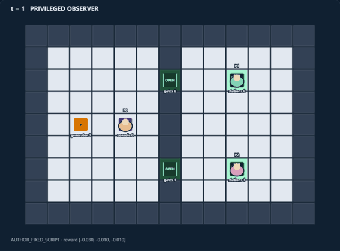
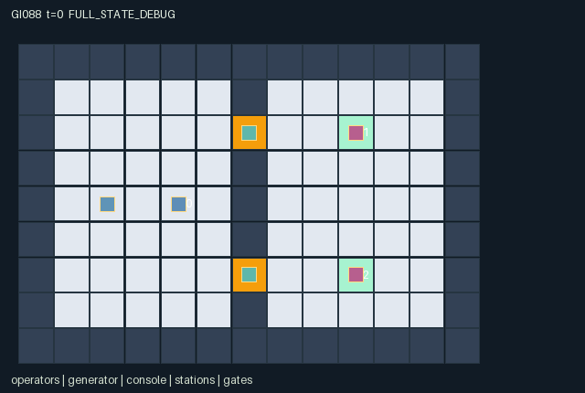

GI088 / SPATIAL
借来的电流
共享发电机在不同路线间分配电力；切换会暂时中断供给，手摇与便携电量互相牵制。
Original saved demonstration
Recorded native state, often authored scripts or interventions; information scope and failures are preserved in the original provenance. This is a saved demonstration, not live browser play.

Release verification episode
Untrained uniform legal actions. Actual JAX state sampled along the full original episode; full-state debug camera. No human performance or learning claim.

Run this game
crucibles play --game 88
Start Python locally, then open the address printed by the terminal. Installation, multiplayer, takeover and keyboard controls →
Objective, rewards & ending
Exact task contract
{
"objective": "All three operators must complete two services before 96 steps while supplying and traversing the shared network.",
"natural_termination": "Joint natural completion when every completed count equals two. No independent customer removal or artificial blackout failure is imposed.",
"interaction": "Routing allocates one common supply unit per turn; switching interrupts it, gate entry spends the same remote capacitor used for service, portable donations can enable a partner request, and private orders require timely radio coordination.",
"observation_access": "Fixed layout, route/buffer/cooldown, gate indicators, power pulses and total service count are public. Orders are self-only. Agents and capacitors are local within distance 3, except a live radio call tracks its sender and visible attributes globally for three turns."
}Declared per-step reward bounds: -1.0 to 9.0. Observability: partially_observable.
Rules
- The common generator sends at most one unit per turn: north, south, or alternating by clock. Its buffer holds ten.
- Cycle routing near [4,4]; a switch costs one buffer unit and interrupts supply on the switch turn and the following turn.
- Crank near [2,4] for two common units. One handcell socket trades two common units for one portable unit.
- Entering a gate consumes one unit from that route service capacitor. Service at the distant station consumes two from the same store.
- Each role must complete two private orders; a completed service flips its next target to the other station.
- Donate one portable unit to help a partner request. Capacitors hold four and leak one every fourth turn.
- A radio call publishes its stored target and tracks the sender for three turns. The old request can become stale after service.
- Local capacitor and agent attributes are hidden beyond radius three unless the agent is broadcasting. Gate indicators and supply pulses are public.
Original mechanism document (historical status wording retained)
# Borrowed Current **Status: AUTHORED_NOT_EXECUTED.** Three operators share the work of power production and routing while pursuing private alternating service orders. Crossing a useful passage subtracts from the exact capacitor a waiting customer needs, so spatial access and service allocation cannot be optimized independently. ## Rules and real cross-agent dependencies A divider at x=6 can be crossed at [6,2] or [6,6]. Its associated stations are [9,2] and [9,6], with initial capacitor levels two and two. The common generator at [2,4] starts with five units, capped at ten. Every supplied unit goes to north, south, or the clock-alternating route, and the source loses that unit. A full destination capacitor stops that turn's supply without consuming buffer. CRANK adds two shared units per cranking role. The roles can trade jobs because each has the same physical interaction capabilities. The console at [4,4] cycles 2 -> 0 -> 1 -> 2. A switch consumes up to one buffer unit and sets cooldown two. There is no supply on the switch turn or next turn; supply resumes when the decremented cooldown reaches zero. Repeated switching can waste power and perpetually delay a distant partner. A handcell recharge at the generator consumes two shared units to gain one portable unit, with capacity two and one rotating-priority socket. A role may instead carry its charge to a station and donate it to a partner. After supply is applied, a successful move entering a gate spends one unit from that route's capacitor. A gate without energy cannot be entered. Once occupied, a safety latch displays it open until its occupant leaves, without creating additional charge or allowing another agent to overlap it. Donations are then applied, so a donor can enable another role's service on the same turn. A service consumes two capacitor units, increases the requester's count, and flips its private target. One donation and one service can be accepted per station per turn, each with rotating identity priority. Every fourth turn, all capacitors lose one remaining unit. This creates timing choices between hoarding, travel, donation and immediate service. Each role needs two completed services. The initial dispatcher starts with a north order, the north customer with north, and the south customer with south. The dispatcher eventually has to leave the console/generator to obtain services; a previously served customer can take over supporting jobs. A finished customer remains able to move, crank, route, donate and signal. This is a joint task with private immediate service rewards, not three separate errands. ## Kernel, information and rewards A=3, O=54, U=11, H=96. Coordinates are integer [x,y], with y increasing downward. All state leaves are fixed-shape int32, float32 or bool arrays; all observations and rewards are float32. Private order is always in that role's observation and is not an entity rendering attribute. RADIO consumes the role's action for that turn, publishes its current target, and makes its position, portable charge, completion count and last radio fields visible to all roles for three recorded states. After a service, the private target flips but a prior radio message does not automatically update. Calling again is a real information/timing decision. Outside a live call, agent fields and station capacitors are visible only within Manhattan distance three. Public route/buffer displays, gate indicators, supply pulses and aggregate service count are included in every observation. The transition applies route changes/cranking/socket charge, one-unit supply, physical walking and crossing cost, local donations, local service, periodic leakage, radio lifetime and terminal assessment. A movement intent may be legal yet blocked by a wall, a closed/empty gate, any other role's old cell or a shared destination. Service, donate and handcell-charge actions are legal intents when their local prerequisites hold, with actual simultaneous energy availability deciding realization. This permits a correctly placed partner donation to enable a service that had insufficient stored energy at the previous observation. Rewards are -0.01 per live role/turn, an additional -0.03 for a crank and -0.02 for a routing action; a service pays its requester 2 and every role 0.2 per accepted service that turn. Joint completion pays every role 6. The possible per-step values fit [-1,9]. All observations fit [0,1] and have exactly 54 columns. The maximum six services and request quotas are game objectives, not evidence thresholds. The binding addendum is implemented: a live input advances the scalar int32 clock by one; natural completion takes priority over the horizon. Already-terminal raw calls preserve the complete state, observation, clock, terminal causes and final event flags, return zero rewards and all-true dones. They are not extra gameplay transitions. The only legal terminal action is WAIT. Autoreset belongs to an external wrapper. No individual is removed from the world before joint completion. Invalid or out-of-range actions become WAIT; blocked cardinal directions remain legal attempted movements and may produce no motion. Each observation slice, entity position, active mask, visibility mask and displayed attribute is declared in manifest.json. scene.json repeats exactly the hash-bound map and declared channels. Its motion comes only from real state positions. A debug full-state view must remain distinct from role views. Public event channels are explicitly present in each role observation; local object/agent attributes are zero-masked together with a visible bit. A hidden entity is not a position hint. ## Literal source evidence - Partial local information with public tracking calls: candidate.py:L19 — `ns["agent_visible"] = (distance <= 3) | (s["call_ttl"][None, :] > 0)` - Switching has a persistent timing cost: candidate.py:L124 — `cooldown = jnp.where(switched, 2, jnp.maximum(0, s["cooldown"][0] - 1))` - Finite shared generation competes with portable charging: candidate.py:L129 — `buffer = buffer - 2 * jnp.sum(charging.astype(jnp.int32))` - One route receives each common supply unit: candidate.py:L134 — `power_event = jax.nn.one_hot(destination, 2, dtype=jnp.int32) * powered.astype(jnp.int32)` - Movement consumes a distant service resource: candidate.py:L153 — `capacitor = capacitor - crossing` - A partner donation enters the same capacitor before service: candidate.py:L157 — `capacitor = capacitor + jnp.sum(at * donating[:, None].astype(jnp.int32), axis=0)` - Service depends on energy after other roles crossing/donation: candidate.py:L159 — `serving = self.select_local((a == 7) & (capacitor[station] >= 2), station, s["t"])` - An order changes privately after service: candidate.py:L162 — `order = jnp.where(serving, 1 - s["order"], s["order"])` - Stored radio messages can become stale: candidate.py:L167 — `call_target = jnp.where(call, s["order"], s["call_target"])` - All three roles matter to joint completion: candidate.py:L169 — `success = jnp.all(completed == 2)` Method extents in this exact source: - `direction`: candidate.py:L12-L14. - `refresh`: candidate.py:L16-L24. - `reset`: candidate.py:L26-L70. - `observe`: candidate.py:L72-L92. - `local_station`: candidate.py:L94-L96. - `legal_actions`: candidate.py:L98-L109. - `select_local`: candidate.py:L111-L115. - `advance`: candidate.py:L117-L196. - `absorb`: candidate.py:L198-L201. - `raw_step`: candidate.py:L203-L204. ## Fixed witnesses and intended intervention differences These fixed scripts inspect local allocation, delayed supply and information rather than claiming all six services. The crossing pair isolates one mover while holding the remote requester fixed. The first script is intended to show calls becoming stale when private orders flip, real portable-cell donations, and delayed south supply after a routing change. No actual outcome is asserted. No scripted outcome is an execution receipt. A successful-looking path in prose is only a prediction from the rules. Scripts that exercise local mechanisms intentionally do not assert whole-task completion. ## Invariants, variation and limits Declared invariants include unique positions and nonnegative clock, buffer, capacitors, handcells, order/call fields and service counters. Construction bounds are buffer<=10, capacitor<=4, handcell<=2, completed<=2, route<=2, cooldown<=2, call_ttl<=3 and service_total<=6. Orders are private dynamic state even though their initial values are fixed by this instance; first service and subsequent timing still change information needs. Other original layouts, private-order distributions, leakage schedules or generator constraints could change partner-dependent allocation strategies; such variants and any learning advantage remain untested. Integer sign-bearing fields (for example no-owner=-1) remain exact int32 values. There is no design-specified int8 distribution to adapt. The external uint32 PRNG key is not duplicated as a state leaf. The authored reset and transitions are deterministic; keys are accepted but not consumed. ## Provenance and reference use This is an original authored kernel for initial window0, attempt00, in the train source stream. No prior candidate, project execution result, heldout layout, evaluation score, ranking or final test was read. No candidate or JAX was imported or run. The action lists are fixed hypotheses, not recorded trajectories. Interface/R0 checks, numerical parity, actual legality along the scripts, intervention replays, animation, training, solvability, optimality, strategic richness and meta-learning effects remain unestablished. Only supplied official references were used. JaxMARL's README informed the intended simultaneous multi-agent adapter boundary (agent-keyed dictionaries and __all__ belong in the later integration layer). Pgx's README informed the separation of explicit transition keys, legal masks and raw terminal state. Craftax's README informed the distinction between a world kernel, state-based rendering and an external reset wrapper. PureJaxRL is an algorithm implementation reference, not a game library; its performance statements are not evidence about this game. Craftax_Baselines/ppo_rnn.py was read only at its environment/reset wrapper interfaces; no PPO/network code or benchmark mechanics were copied. No upstream implementation or map is incorporated. These references are attributed in generation_record.json with exact supplied file hashes and upstream URLs. The copied community_delivery_requirements.json still lists IDs 82-85. The exact assigned design/request IDs 86-89 control this batch; the general interaction and presentation requirements are applied without rewriting that input. Actual dispatch identity, backend and usage evidence are retained by the coordinator, not invented here.
Commands
Roles & abilities
agent_0 initial dispatcher with private north order; must also complete service
agent_1 initial north customer; next order flips south
agent_2 initial south customer; next order flips north
Observation permissions
Training receives only the original observation rows. Role cameras use declared visibility; debug cameras are explicitly marked. Local benchmark records log debug exposure and role takeover history.
Exact observation layout
[
{
"slice": [
0,
3
],
"meaning": "Observer identity one-hot",
"visibility": "self"
},
{
"slice": [
3,
5
],
"meaning": "Own current private order (north=0,south=1) and own completed services /2",
"visibility": "self"
},
{
"slice": [
5,
13
],
"meaning": "Public t/96, done, success, route/2, supply cooldown/2, buffer/10, switch event, service_total/6",
"visibility": "public"
},
{
"slice": [
13,
15
],
"meaning": "Public north/south gate-open indicators",
"visibility": "public"
},
{
"slice": [
15,
17
],
"meaning": "Public north/south supply pulse for last transition",
"visibility": "public"
},
{
"slice": [
17,
25
],
"meaning": "Public generator, console, north gate and south gate [x/12,y/8] coordinates",
"visibility": "public"
},
{
"slice": [
25,
46
],
"meaning": "Three role slots: [x/12,y/8,handcell/2,completed/2,last_radio_target,radio_ttl/3,visible]; zero outside radius 3 unless role radio is live",
"visibility": "local"
},
{
"slice": [
46,
54
],
"meaning": "Two station slots: [x/12,y/8,capacitor/4,visible]; zero outside Manhattan radius 3",
"visibility": "local"
}
]Entity visibility & attributes
[
{
"id": "operators",
"kind": "agent",
"count": 3,
"position": [
"agent_pos"
],
"active": [
"agent_active"
],
"visibility": [
"agent_visible"
],
"attributes": [
{
"state_path": [
"handcell"
],
"meaning": "Portable charge, capacity 2",
"display": "bar"
},
{
"state_path": [
"completed"
],
"meaning": "Services completed, goal 2",
"display": "number"
},
{
"state_path": [
"call_target"
],
"meaning": "Last radio request: 0 north, 1 south",
"display": "category"
},
{
"state_path": [
"call_ttl"
],
"meaning": "Radio tracking turns remaining",
"display": "number"
}
]
},
{
"id": "generator",
"kind": "object",
"count": 1,
"position": [
"generator_pos"
],
"active": [
"generator_active"
],
"visibility": [
"generator_visible"
],
"attributes": [
{
"state_path": [
"buffer"
],
"meaning": "Public shared grid buffer, capacity 10",
"display": "bar"
}
]
},
{
"id": "console",
"kind": "object",
"count": 1,
"position": [
"console_pos"
],
"active": [
"console_active"
],
"visibility": [
"console_visible"
],
"attributes": [
{
"state_path": [
"route"
],
"meaning": "Route: 0 north, 1 south, 2 alternating",
"display": "category"
},
{
"state_path": [
"cooldown"
],
"meaning": "Remaining supply interruption",
"display": "number"
}
]
},
{
"id": "stations",
"kind": "resource",
"count": 2,
"position": [
"station_pos"
],
"active": [
"station_active"
],
"visibility": [
"station_visible"
],
"attributes": [
{
"state_path": [
"capacitor"
],
"meaning": "Stored route energy, capacity 4",
"display": "bar"
}
]
},
{
"id": "gates",
"kind": "gate",
"count": 2,
"position": [
"gate_pos"
],
"active": [
"gate_active"
],
"visibility": [
"gate_visible"
],
"attributes": [
{
"state_path": [
"gate_open"
],
"meaning": "Open from stored power or safety occupancy latch",
"display": "flag"
}
]
}
]Actual verification & provenance
Per-game execution receipt
{
"game": "gi088",
"status": "PASS",
"verification_revision": 2,
"source_sha256": "cb67ed2f5c9bec408d29d029efc5c9d1eea8de24a22b4b49e96d709b504d38e3",
"seed": 20261101,
"runtime": {
"jax": "0.4.38",
"numpy": "1.26.4",
"devices": [
"TFRT_CPU_0"
]
},
"dimensions": {
"num_agents": 3,
"observation_size": 54,
"num_actions": 11,
"max_steps": 96
},
"checks": {
"eager_reset": {
"status": "PASS",
"seconds": 2.0289297103881836
},
"observation_spaces_legal_masks": {
"status": "PASS",
"seconds": 0.5815029144287109
},
"eager_step": {
"status": "PASS",
"seconds": 0.9371843338012695
},
"jit_reset": {
"status": "PASS",
"seconds": 0.2618906497955322
},
"jit_step": {
"status": "PASS",
"seconds": 0.8516478538513184
},
"eager_jit_integer_parity_float_measurement": {
"status": "PASS",
"seconds": 0.0010294914245605469
},
"jit_vmap_reset": {
"status": "PASS",
"seconds": 0.340914249420166
},
"jit_vmap_step": {
"status": "PASS",
"seconds": 2.409975290298462
},
"outer_autoreset_api": {
"status": "PASS",
"seconds": 1.338913917541504
},
"full_original_horizon_episode_and_render": {
"status": "PASS",
"seconds": 3.649240016937256
}
},
"human_scores": null,
"browser_controls": "PENDING",
"failures": [],
"elapsed_seconds": 13.172175884246826,
"float_parity_max_abs": 5.960464477539063e-08,
"numerical_parity": "UNDETERMINED_NONZERO_FLOAT_DIFFERENCE",
"raw_terminal_absorbing": "PASS",
"terminal_outer_reset": "PASS",
"episode_steps": 96,
"scripted_random_returns": [
-0.7799999807029963,
1.2400000784546137,
-0.7599999811500311
],
"terminal": true,
"demo_information": "FULL_STATE_DEBUG",
"demo_frames": 25,
"render_roles_checked": 3
}Chromium control verification
{
"game": "gi088",
"status": "PASS",
"human_scores": null,
"engineering": true,
"checks": [
"catalog_selected_and_real_native_reset",
"dom_queue_and_native_step",
"second_participant_ownership_and_native_joint_step",
"all_roles_individually_controllable_no_role_cap",
"explicit_debug_camera",
"release_to_pure_ai_without_reset"
],
"ui_sha256": "15b5861d23b3c42811865c954d5a988280bbfd21cf8e93754be2437a027158c5",
"seconds": 4.028051853179932
}Original identity and file hashes
{
"id": 88,
"key": "gi088",
"title": "借来的电流",
"summary": "共享发电机在不同路线间分配电力；切换会暂时中断供给，手摇与便携电量互相牵制。",
"tags": [
"能源分配",
"共享设施"
],
"family": "spatial",
"dimensions": {
"num_agents": 3,
"observation_size": 54,
"num_actions": 11,
"max_steps": 96
},
"source_sha256": "cb67ed2f5c9bec408d29d029efc5c9d1eea8de24a22b4b49e96d709b504d38e3",
"manifest_sha256": "c74f2a75b60b94fa9e077c2c82acac9faf2d850d88cf0644659d1e5c6098e262",
"files": [
{
"file": "candidate.py",
"sha256": "cb67ed2f5c9bec408d29d029efc5c9d1eea8de24a22b4b49e96d709b504d38e3",
"bytes": 11865,
"origin": "work/exp_2/game_incubator_v3/community_games222_225_visualization_root222_v1/native154_candidate/registry/v2/games/game-v3-00088/candidate.py"
},
{
"file": "manifest.json",
"sha256": "c74f2a75b60b94fa9e077c2c82acac9faf2d850d88cf0644659d1e5c6098e262",
"bytes": 14039,
"origin": "work/exp_2/game_incubator_v3/community_games222_225_visualization_root222_v1/native154_candidate/registry/v2/games/game-v3-00088/manifest.json"
},
{
"file": "scene.json",
"sha256": "6ade6b63fcbce94cd97c8df37b915b896f90f24486a382461d3050ef22ef2282",
"bytes": 7267,
"origin": "work/exp_2/game_incubator_v3/community_games222_225_visualization_root222_v1/native154_candidate/registry/v2/games/game-v3-00088/scene.json"
},
{
"file": "mechanism.md",
"sha256": "06ecb92df8536593ad09f9bc3bc7ca10c47d63bee46fff4a7ab55fe1ea0eddcc",
"bytes": 10899,
"origin": "work/exp_2/game_incubator_v3/sources/game-v3-00088/attempt_00/mechanism.md"
},
{
"file": "playthrough.json",
"sha256": "55e315a87fd51dd3265ef32496669a6b6a829a201723fd7a56a389452b0aa74e",
"bytes": 5088,
"origin": "work/exp_2/game_incubator_v3/sources/game-v3-00088/attempt_00/playthrough.json"
}
],
"original_status": "NATIVE154_REFERENCE",
"original_saved_replay": true,
"release_validation": "PASS",
"human_scores": null,
"browser_validation": "PASS"
}